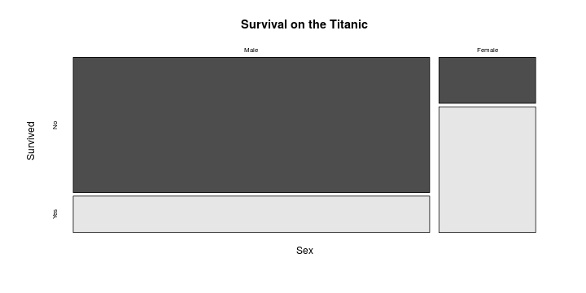
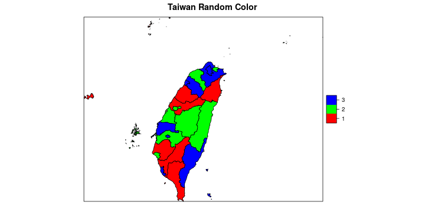
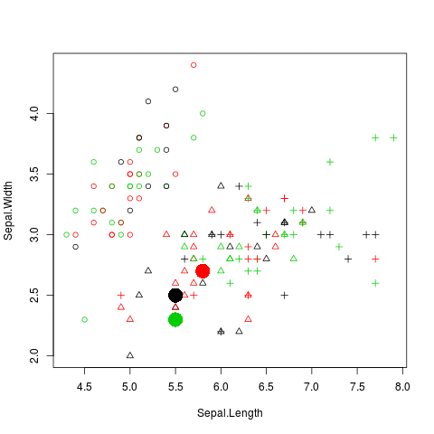
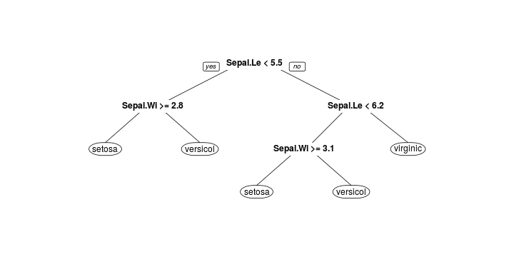

- R 語言的視覺化
- R 語言的Clustering 相關套件介紹
- R 語言的Classification 相關套件介紹
- R 語言的Frequency Pattern Mining 相關套件介紹
- R 語言的Text Mining 相關套件介紹
R 語言和Data Mining
Wush Wu
目錄
R 語言的視覺化
R 的繪圖引擎
- X11: Unix 作業系統上的X11 桌面系統
- windows: 用於Windows系統
- quartz: Mac OS X 系統
- postscript: 用於印表機或是建立PostScript文件
- pdf, png, jpeg: 用於建立特定格式的檔案
- html 和 javascript: 用於建立網頁上的互動式圖表
R 的繪圖簡介
- API 設計
- 基本繪圖API
- ggplot2
- 大數據時代的視覺化

R 的各種基礎Visualization API
Visualization 簡單分類
- 單變數
- 類別型變數
- 連續型變數
- 雙變數
- 連續 vs 連續
- 連續 vs 離散
- 連續 vs 連續
- 多變量
類別型變數
pie(table(iris$Species))
連續型變數
par(mfrow = c(1, 2))
plot(density(iris$Sepal.Length))
hist(iris$Sepal.Length)
類別 v.s. 類別
data(Titanic)
mosaicplot(~ Sex + Survived, data = Titanic,
main = "Survival on the Titanic", color = TRUE)

類別 v.s. 連續
plot(Sepal.Length ~ Species, iris)
連續 v.s. 連續
plot(dist ~ speed, cars)
多變量
plot(iris)
多變量
suppressPackageStartupMessages(library(PerformanceAnalytics))
suppressWarnings(chart.Correlation(iris[-5], bg=iris$Species, pch=21))
多變量
library(corrplot)
corrplot(cor(mtcars), method = "circle")
各種R 和分析結果結合的視覺化
plot和Linear Regression
g <- lm(dist ~ speed, cars)
par(mfrow = c(2,2))
plot(g)
plot和Regression
plot(cars, main = "lowess(cars)")
lines(lowess(cars), col = 2)
W. S. Cleveland, E. Grosse and W. M. Shyu (1992) Local regression models. Chapter 8 of Statistical Models in S eds J.M. Chambers and T.J. Hastie, Wadsworth & Brooks/Cole.
plot和Regression
suppressPackageStartupMessages(library(sm))
with(cars, sm.regression(dist, speed, method = "aicc",
col = "red", model = "linear"))
Bowman, A.W. and Azzalini, A. (1997). Applied Smoothing Techniques for Data Analysis: the Kernel Approach with S-Plus Illustrations. Oxford University Press, Oxford.
plot和Decision Tree
library(rpart)
library(rpart.plot)
rpart.plot(rpart(Species ~ ., iris))

多變量 PCA
library(ade4)
g <- dudi.pca(iris[,-5], scan = FALSE)
scatter(g)
R 的基本繪圖API
- 高階繪圖指令：依據輸入的資料產生完整的圖片
- 低階繪圖指令：修飾當前的圖片
基礎繪圖方式與R 的基本繪圖API
- 泛用型的物件導向API：
plot本身能以直角座標系統繪製各種幾何圖形plot能和模型結合，依據模型的型態繪製各種模型的結果plot.lm,rpart::plot.rpart
基礎繪圖API
pie,hist,boxplot,barplot, ...- 清空之前的繪圖結果
lines,points,legend,title,text,polygon, ..- 修飾之前的繪圖結果
par- 控制繪圖引擎的參數
ggplot2
Reference
- Wilkinson, Leland (2005). The Grammar of Graphics. Springer. ISBN 978-0-387-98774-3.
ggplot2 的邏輯
- 基礎API 是一種用紙筆模型來繪圖的設計思想
- ggplot2 是一種以繪圖物件為主的設計思想
ggplot2 對R 的影響
- 大量以ggplot2的API 為骨幹的套件
ggplot2 離散
data(diamonds, package = "ggplot2")
ggplot(diamonds, aes(x = color)) +
geom_bar()
ggplot2 連續
ggplot(diamonds, aes(x = price)) +
geom_density()
ggplot2 離散 v.s. 離散
http://stackoverflow.com/questions/19233365/how-to-create-a-marimekko-mosaic-plot-in-ggplot2
ggplot2 類別 v.s. 連續
ggplot(iris, aes(x = Species, y = Sepal.Width)) +
geom_boxplot()
ggplot2 連續 v.s. 連續
ggplot(iris, aes(x = Sepal.Width, y = Sepal.Length, color = Species)) +
geom_point()
大數據時代的視覺化
大數據時代視覺化的挑戰
- 資料太大，直接化就當機，打開圖的人也會當機
- 資料的維度太多，需要能對圖做操作，而不是程式碼
- 資料的種類更廣泛，除了離散、數值之外，還包含如「圖資」等各種資料
tabplot
- Google: "R big data visualization"
- https://cran.r-project.org/web/packages/tabplot/vignettes/tabplot-vignette.html
- 初步解決了數據量的問題
Web Based 的互動式解決方案
- Java Script
- http://www.htmlwidgets.org/
- 透過互動圖表解決資料維度更多的問題
- http://yihui.name/recharts/
- Shiny
Open Source 太棒了
地圖
suppressPackageStartupMessages(library(Rtwmap))
data(county1984)
random.color <- as.factor(sample(1:3, length(county1984), TRUE))
color <- rainbow(3)
county1984$random.color <- random.color
spplot(county1984, "random.color", col.regions = color, main = "Taiwan Random Color")

Network Visualization
suppressPackageStartupMessages(library(networkD3))
data(MisLinks)
data(MisNodes)
# Create graph
forceNetwork(Links = MisLinks, Nodes = MisNodes, Source = "source",
Target = "target", Value = "value", NodeID = "name",
Group = "group", opacity = 0.4, zoom = TRUE)
資料的流動 - Sankey Diagram
http://www.magesblog.com/2014/03/sankey-diagrams-with-googlevis.html
R 與數據模型
數據模型的API 設計模式
- 線性代數介面
- Formula 介面
線性代數介面
g <- lm.fit(X, y, ...)
- \(X\): 一個代表解釋變數的矩陣
- \(y\): 一個代表應變數的向量
- \(...\): 控制演算法的參數
Formula 介面
g <- lm(y ~ x1 + x2 + x3, data, ...)
predict(g, data2)
- \(y \sim x_1 + x_2 + x_3\): 描述y 和X 的關係
- \(data\): 描述$y, x_1, x_2, x_3$的來源
- \(...\): 控制演算法的參數
- Formula 介面支援各種Operator:
+-:*|^I1
兩種介面的比較
- 線性代數介面：
- 可以控制資料結構
- 可以做更高的客製化
- 必須要自己從資料建立矩陣ex:
model.matrix
- Formula 介面：
- 更清楚的程式碼
- 更彈性、簡潔的語法ex:
log(dist) ~ I(speed^2) - 被公認的好設計
Dimension Reduction
PCA 內建語法
- 學習：
g <- prcomp(iris[,1:4]) - 預測：
predict(g, iris[,1:4])
PCA 內建語法
pc.cr <- prcomp(iris[,1:4], cor = TRUE)
plot(pc.cr)
PCA 內建語法
biplot(pc.cr)
- 套件：
multiDimBio::PPCA: Performs a probabilistic principle component analysis using the function 'pca' in the package'pcaMethods'CADStat::pca.fa.JGR: This function receives inputs from the Java GUI for factor analysis/principle component analysis and sends these parameters to the FA/PCA function.imputeR::pcrR: Principle component regression method for imputation- 族繁不及備載
泛用套件
library(ade4)
g <- dudi.pca(iris[,-5], scan = FALSE)
scatter(g)

如何比較套件的實作？
- 親身體驗
- 道聽胡說
- 熱門推薦：觀察下載數量
- CRAN log
Feature Selection
Clustering
CRAN Task View
- CRAN針對各種學科，撰寫套件的survey報告
- CRAN Task View: Cluster Analysis & Finite Mixture Models
Hierarchical Clustering
cl <- hclust(dist(iris[,1:4]))
suppressWarnings(plot(as.dendrogram(cl), leaflab = "none"))
rect.hclust(cl, k=3)
Hierarchical Clustering
cl2 <- cutree(cl, k = 3)
plot(iris[,1:2], col = cl2, pch = as.integer(iris$Species))
Partitioning Clustering - K Means
cl <- kmeans(iris[,1:2], centers = 3)

Density-Based Clustering: DBSCAN
data(ruspini, package="cluster")
library(fpc)
cl <- dbscan(ruspini, eps = 20)
plot(ruspini, col = cl$cluster + 1)
Classification
Decision Tree
library(rpart)
g <- rpart(Species ~ Sepal.Length + Sepal.Width, iris)
library(rpart.plot)
rpart.plot(g)

Decision Tree
suppressPackageStartupMessages(library(plotmo))
plotmo(g, type = "class", type2 = "image", degree1 = FALSE,
pch.response = as.integer(iris$Species), ngrid2 = 100,
col.response = c("#990000", "#009900", "#000099")[as.integer(iris$Species)],
image.col = c("#ffcccc", "#ccffcc", "#ccccff"))
Random Forest
suppressPackageStartupMessages(library(xgboost))
iris.x <- model.matrix(~ Sepal.Length + Sepal.Width - 1, iris)
g <- xgboost(data = iris.x,
label = as.integer(iris$Species) - 1, max.depth = 3,
num_parallel_tree = 100, subsample = 0.5, colsample_bytree =0.5,
num_class = 3, nround = 1, params = list(objective = "multi:softprob"))
Gradient Boosting Decision Tree
suppressPackageStartupMessages(library(xgboost))
iris.x <- model.matrix(~ Sepal.Length + Sepal.Width - 1, iris)
g <- xgboost(data = iris.x,
label = as.integer(iris$Species) - 1, max.depth = 3,
num_parallel_tree = 100, num_class = 3, nround = 100,
params = list(objective = "multi:softprob"))
Support Vector Machine
suppressPackageStartupMessages(library(e1071))
g <- svm(Species ~ Sepal.Length + Sepal.Width, iris)

Neuron Network
suppressPackageStartupMessages(library(neuralnet))
g <- neuralnet(setosa + versicolor + virginica ~ Sepal.Length + Sepal.Width, iris2,
hidden = c(2,2), rep = 1, stepmax = 1e7)

Neuron Network
suppressPackageStartupMessages(library(plotmo))
plotmo(g, type = "class", type2 = "image", degree1 = FALSE,
pch.response = as.integer(iris$Species), ngrid2 = 100,
col.response = c("#990000", "#009900", "#000099")[as.integer(iris$Species)],
image.col = c("#ffcccc", "#ccffcc", "#ccccff"))
Association Rule
Transaction
suppressPackageStartupMessages(library(arules))
summary(Adult)
transactions as itemMatrix in sparse format with
48842 rows (elements/itemsets/transactions) and
115 columns (items) and a density of 0.1089938631
most frequent items:
capital-loss=None capital-gain=None
46560 44807
native-country=United-States race=White
43832 41762
workclass=Private (Other)
33906 401333
element (itemset/transaction) length distribution:
sizes
9 10 11 12 13
19 971 2067 15623 30162
Min. 1st Qu. Median Mean 3rd Qu. Max.
9.00000 12.00000 13.00000 12.53429 13.00000 13.00000
includes extended item information - examples:
labels variables levels
1 age=Young age Young
2 age=Middle-aged age Middle-aged
3 age=Senior age Senior
includes extended transaction information - examples:
transactionID
1 1
2 2
3 3
Item Frequency
itemFrequencyPlot(Adult, support = 0.2)
Association Rule Mining
rules <- apriori(Adult, parameter = list(support = 0.01, confidence = 0.6))
Apriori
Parameter specification:
confidence minval smax arem aval originalSupport support minlen maxlen
0.6 0.1 1 none FALSE TRUE 0.01 1 10
target ext
rules FALSE
Algorithmic control:
filter tree heap memopt load sort verbose
0.1 TRUE TRUE FALSE TRUE 2 TRUE
Absolute minimum support count: 488
set item appearances ...[0 item(s)] done [0.00s].
set transactions ...[115 item(s), 48842 transaction(s)] done [0.02s].
sorting and recoding items ... [67 item(s)] done [0.01s].
creating transaction tree ... done [0.03s].
checking subsets of size 1 2 3 4 5 6 7 8 9 10 done [0.63s].
writing ... [276443 rule(s)] done [0.03s].
creating S4 object ... done [0.07s].
summary(rules)
set of 276443 rules
rule length distribution (lhs + rhs):sizes
1 2 3 4 5 6 7 8 9 10
6 432 4981 22127 52669 75104 67198 38094 13244 2588
Min. 1st Qu. Median Mean 3rd Qu. Max.
1.000000 5.000000 6.000000 6.288834 7.000000 10.000000
summary of quality measures:
support confidence lift
Min. :0.01001187 Min. :0.6000000 Min. : 0.7171385
1st Qu.:0.01253020 1st Qu.:0.7691154 1st Qu.: 1.0100024
Median :0.01701405 Median :0.9051491 Median : 1.0553820
Mean :0.02679055 Mean :0.8600124 Mean : 1.3109483
3rd Qu.:0.02741493 3rd Qu.:0.9542484 3rd Qu.: 1.2980105
Max. :0.95327792 Max. :1.0000000 Max. :20.6826252
mining info:
data ntransactions support confidence
Adult 48842 0.01 0.6
Analyzing Rules
rules.income.small <- subset(rules, subset = rhs %in% "income=small" & lift > 1.2)
inspect(head(sort(rules.income.small, by = "confidence"), n = 3))
lhs rhs support confidence lift
1 {workclass=Private,
marital-status=Never-married,
relationship=Own-child,
sex=Male,
hours-per-week=Part-time,
native-country=United-States} => {income=small} 0.01074894558 0.7104194858 1.403653257
2 {workclass=Private,
marital-status=Never-married,
relationship=Own-child,
sex=Male,
hours-per-week=Part-time} => {income=small} 0.01144506777 0.7102922490 1.403401862
3 {workclass=Private,
marital-status=Never-married,
relationship=Own-child,
sex=Male,
capital-gain=None,
hours-per-week=Part-time,
native-country=United-States} => {income=small} 0.01046230703 0.7097222222 1.402275598
Text Mining
ptt 笨版文章分析
library(httr)
library(XML)
http://rstudio-pubs-static.s3.amazonaws.com/12422_b2b48bb2da7942acaca5ace45bd8c60c.html
文字處理
library(tm)
library(tmcn)
library(jiebaR)
cutter <- worker()
d.corpus <- Corpus(DirSource("ptt-StupidClown/"), list(language = NA))
...
關鍵字詞雲
suppressPackageStartupMessages(library(wordcloud))
suppressWarnings(
wordcloud(d$word, d$freq, min.freq = 10, random.order = F, ordered.colors = F,
colors = rainbow(length(row.names(m1))))
)
關鍵字的頻率
d.dtm <- DocumentTermMatrix(d.corpus, control = list(wordLengths = c(2, Inf)))
findFreqTerms(d.dtm, 30)
[1] "一下" "一件" "一份" "一位" "一個" "一個月"
[7] "一包" "一半" "一口" "一句" "一台" "一堆"
[13] "一塊" "一大" "一天" "一如" "一定" "一家"
[19] "一年" "一張" "一把" "一旁" "一時" "一杯"
[25] "一條" "一樓" "一模一樣" "一樣" "一次" "一片"
[31] "一看" "一眼" "一秒" "一種" "一篇" "一群"
[37] "一聲" "一臉" "一起" "一路" "一邊" "一間"
[43] "一陣" "一陣子" "一隻" "一顆" "一點" "三個"
[49] "三天" "三樓" "三次" "三秒" "上來" "上去"
[55] "上學" "上次" "上班" "上網" "上課" "上車"
[61] "上面" "下來" "下午" "下去" "下樓" "下次"
[67] "下班" "下課" "下車" "下面" "不了" "不像"
[73] "不到" "不可" "不吃" "不同" "不在" "不夠"
[79] "不太" "不好" "不好意思" "不少" "不想" "不敢"
[85] "不斷" "不是" "不是故意" "不會" "不用" "不知"
[91] "不能" "不行" "不要" "不見" "不過" "不錯"
[97] "世界" "丟臉" "並視" "中午" "中國" "中文"
[103] "中時" "中毒" "中秋" "中秋節" "中肯" "中間"
[109] "主人" "主任" "主管" "之前" "之後" "之銘言"
[115] "之類" "乖乖" "乾淨" "乾脆" "了解" "事件"
[121] "事情" "二十" "二樓" "五樓" "交給" "人員"
[127] "人帥" "人生" "什麼" "今天" "今年" "介紹"
[133] "仔細" "他們" "代表" "以上" "以下" "以前"
[139] "以圖" "以後" "以為" "休息" "伸手" "似乎"
[145] "位子" "位置" "作業" "你們" "你好" "你媽"
[151] "你家" "使用" "來不及" "來到" "來看" "來自"
[157] "來說" "便利商店" "便宜" "便當" "保護" "保險套"
[163] "個人" "做過" "停車" "健康" "健忘" "偶爾"
[169] "偷偷" "傳來" "傳給" "傳說" "傷眼" "傻眼"
[175] "像是" "兄弟" "充滿" "先生" "免費" "兒子"
[181] "兔子" "內容" "內心" "內衣" "內褲" "全家"
[187] "全班" "全部" "兩位" "兩個" "兩天" "兩次"
[193] "兩隻" "八卦" "公分" "公司" "公告" "公車"
[199] "六樓" "其他人" "其實" "再也" "再來" "再有"
[205] "再次" "再說" "冒險" "冰塊" "冰箱" "冷氣"
[211] "凸凸" "出來" "出去" "出口" "出現" "出賣"
[217] "出門" "刀片" "分享" "分手" "分鐘" "分類"
[223] "別人" "別的" "刪除" "到底" "到處" "刷牙"
[229] "前天" "前情" "前面" "剛剛" "剛好" "剛才"
[235] "剩下" "副總" "創意" "劇情" "功能" "加上"
[241] "加入" "加油" "加油站" "劣退" "努力" "努力下去"
[247] "動作" "動物" "包包" "包裝" "十分" "十年"
[253] "午餐" "半夜" "南無" "卡位" "印象" "危險"
[259] "原來" "原味" "原因" "原圖" "原好" "原媽"
[265] "原文" "原是" "原有" "原本" "原波" "厲害"
[271] "去年" "參加" "友人" "反應" "反正" "反而"
[277] "叔叔" "口味" "口水" "口袋" "只好" "只會"
[283] "只能" "召喚" "可怕" "可惜" "可惡" "可愛"
[289] "可憐" "可樂" "可能" "台北" "台南" "台灣"
[295] "台語" "右手" "右邊" "司機" "吃掉" "吃過"
[301] "吃飯" "吃飽" "各種" "同事" "同學" "同意"
[307] "同時" "同樣" "名字" "名稱" "吐司" "吸管"
[313] "告白" "告訴" "味道" "呵呵" "呼吸" "咖哩"
[319] "咖啡" "哀傷" "哈哈哈" "哈哈哈哈" "員工" "哥哥"
[325] "哪來" "哪個" "哪招" "哪裡" "哭哭" "唬爛"
[331] "唯一" "啊啊啊" "問了" "問他" "問卷" "問我"
[337] "問題" "喇叭" "喜歡" "喝湯" "單純" "單身"
[343] "嗚嗚" "嘉義人" "嘖嘖" "嘗試" "嘴巴" "嘴裡"
[349] "嘴角" "嘿嘿" "噁心" "噴笑" "嚇到" "嚇死"
[355] "嚴重" "四樓" "回來" "回到" "回去" "回家"
[361] "回憶" "回應" "回文" "回答" "回覆" "回頭"
[367] "因為" "國中" "國小" "國文" "圖勒" "圖好"
[373] "圖片" "在家" "地上" "地方" "地理" "地點"
[379] "坐下" "坐在" "垃圾" "垃圾桶" "基於" "報到"
[385] "報名" "報告" "壓力" "壞人" "壞掉" "外套"
[391] "外面" "多久" "多多" "多次" "夜市" "大人"
[397] "大便" "大叔" "大哥" "大哭" "大大" "大嫂"
[403] "大學" "大學生" "大家" "大概" "大笑" "大約"
[409] "大聲" "大腿" "大隻" "天兵" "天才" "天氣"
[415] "天然" "太多" "太大" "太好了" "太強" "太扯"
[421] "太有" "太猛" "太神" "太陽" "失敗" "奇怪"
[427] "女兒" "女友" "女孩" "女朋友" "女生" "奶奶"
[433] "奶茶" "她們" "好不好" "好不容易" "好久" "好像"
[439] "好友" "好吃" "好喝" "好壞" "好壯" "好多"
[445] "好奇" "好好" "好好笑" "好強" "好心" "好慘"
[451] "好玩" "好痛" "好看" "好笑" "好笨" "好險"
[457] "妳有" "妹妹" "姊姊" "姐姐" "姑姑" "姿勢"
[463] "娃娃" "媽咪" "媽媽" "媽我" "孤單" "孩子"
[469] "學妹" "學弟" "學校" "學測" "學生" "學長"
[475] "安全" "安全帽" "安安" "安慰" "安裝" "完全"
[481] "完成" "完整" "宜蘭" "宜蘭人" "客人" "客廳"
[487] "客服" "室友" "害怕" "宵夜" "家人" "家裡"
[493] "容易" "宿舍" "密碼" "實在" "實在太" "實驗"
[499] "寵物" "寶貝" "將板" "專業" "對不起" "對方"
[505] "對於" "對話" "對面" "小女" "小妹" "小姐"
[511] "小孩" "小學" "小寶" "小小" "小屁孩" "小弟"
[517] "小強" "小心" "小時" "小時候" "小朋友" "小聲"
[523] "小腿" "小花" "小魯" "小黑" "少於" "尖叫"
[529] "尤其" "就劣" "就問" "就算" "就要" "尷尬"
[535] "屁股" "居然" "崩潰" "崩皿" "工作" "工具"
[541] "工程師" "左右" "左手" "左轉" "巧克力" "差不多"
[547] "差點" "已經" "布丁" "希望" "帥哥" "帥氣"
[553] "師傅" "帳號" "帶著" "常常" "常識" "幫忙"
[559] "平安" "平常" "年代" "年紀" "年輕" "幸好"
[565] "幸福" "幸運" "幹嘛" "幽默" "幾乎" "幾個"
[571] "幾天" "幾年" "幾次" "床上" "底下" "店員"
[577] "店裡" "店長" "度過難關" "康復" "廁所" "廚房"
[583] "廣告" "建議" "引述" "弟弟" "強者" "彰化"
[589] "彰化人" "影片" "影響" "往常" "很久" "很多"
[595] "很大" "很少" "很快" "後來" "後勁" "後悔"
[601] "後續" "後面" "得到" "從小" "微弱" "微笑"
[607] "心中" "心情" "心想" "心裡" "必須" "忍不住"
[613] "忘記" "快樂" "快點" "忽然" "怎樣" "怎麼"
[619] "怎麼辦" "怒噓" "思考" "怪怪的" "恍神" "恐怖"
[625] "恐龍" "恩愛" "恭喜" "悠遊" "您好" "悲劇"
[631] "情況" "想像" "想到" "想想" "想發" "想要"
[637] "想起" "想過" "意外" "意思" "愛心" "感到"
[643] "感動" "感受" "感情" "感覺" "感謝" "慢慢"
[649] "應徵" "應該" "懷疑" "成功" "我來" "我們"
[655] "我剛" "我哥" "我問" "我妹" "我媽" "我家"
[661] "我弟" "我會" "我爸" "我用" "我要" "我還"
[667] "或許" "截圖" "房間" "所有" "手上" "手指"
[673] "手機" "才能" "打不開" "打來" "打工" "打掃"
[679] "打算" "打給" "打錯" "打開" "打電話" "找到"
[685] "承認" "技能" "投票" "抬頭" "抱歉" "拍拍"
[691] "拍照" "拔刺" "拜拜" "拜託" "拿來" "拿出"
[697] "拿到" "捷運" "掃把" "排版" "排隊" "接下來"
[703] "接到" "接受" "接著" "控制" "推原" "推圖"
[709] "推推" "推文" "推樓" "推薦" "掩面" "提到"
[715] "提醒" "握手" "搜尋" "搞不好" "搞笑" "搞錯"
[721] "摸摸" "擔心" "支持" "收到" "放假" "放到"
[727] "放在" "放學" "放屁" "放心" "放棄" "放生"
[733] "故事" "故意" "效果" "救援" "教室" "教授"
[739] "教育" "敲碗" "整個" "整理" "數學" "文字"
[745] "文章" "文筆" "料理" "新竹" "新聞" "方便"
[751] "方向" "方式" "方法" "於是" "旁邊" "日本"
[757] "早上" "早就" "早日康復" "早餐" "明天" "明年"
[763] "明明" "明白" "明顯" "昨天" "昨天晚上" "昨晚"
[769] "是不是" "是否" "是從" "時代" "時候" "晚上"
[775] "晚餐" "智障" "暑假" "暗示" "暴力" "書包"
[781] "曾經" "最好" "最後" "最近" "月亮" "有人"
[787] "有個" "有名" "有圖" "有夠" "有天" "有時"
[793] "有時候" "有次" "有沒有" "有用" "有種" "有趣"
[799] "有點" "有點像" "朋友" "服務" "服務生" "朝聖"
[805] "期待" "未來" "本人" "本來" "本魯" "杯子"
[811] "東西" "板工" "某個" "某天" "查理" "根本"
[817] "桃園" "桌上" "棒棒" "棒球" "椅子" "概念"
[823] "樓上" "樓下" "樓主" "樓梯" "樓樓" "標準"
[829] "模式" "樣子" "機會" "機車" "橡皮擦" "檢查"
[835] "檸檬" "櫃檯" "歡樂" "歡迎" "正在" "正妹"
[841] "正常" "正文" "正當" "正確" "正解" "此時"
[847] "此風" "母親" "每個" "每天" "每次" "比較"
[853] "氣球" "水桶" "水龍頭" "永遠" "決定" "沒事"
[859] "沒人" "沒什麼" "沒圖" "沒多久" "沒帶" "沒想到"
[865] "沒有" "沒用" "沒笨點" "沒聽過" "沒錯" "沒關係"
[871] "沙發" "治療" "泡泡" "注意" "注音" "洋蔥"
[877] "洗完" "洗手" "洗澡" "活動" "流行" "浪費"
[883] "浴室" "海豚" "消失" "清楚" "測試" "湯匙"
[889] "準備" "溫馨" "滷味" "滿壯" "漂亮" "漢堡"
[895] "漫畫" "火車" "火車站" "火鍋" "炫耀" "為何"
[901] "烤肉" "無奈" "無法" "無聊" "無腦" "無言"
[907] "無誤" "無論如何" "無辜" "無限" "然後" "照片"
[913] "熟悉" "爆炸" "爆笑" "爆米花" "爆頭" "父親"
[919] "爸媽" "爸爸" "爺爺" "版主" "牌子" "牛奶"
[925] "牛肉" "特別" "特地" "狀態" "狀況" "狂笑"
[931] "狗狗" "猶豫" "玉米" "玩具" "玻璃" "珍珠"
[937] "班上" "現在" "現場" "理解" "瓦斯" "甚麼"
[943] "生日" "生日快樂" "生氣" "生活" "產品" "用力"
[949] "用心" "由於" "男人" "男友" "男朋友" "男生"
[955] "留下" "留言" "畢業" "畢竟" "番茄" "畫的"
[961] "畫面" "畫風" "當下" "當兵" "當初" "當天"
[967] "當年" "當我" "當時" "當然" "疑惑" "痛苦"
[973] "瘋狂" "發信站" "發文" "發現" "發生" "發票"
[979] "白痴" "白癡" "白色" "的確" "的話" "盒子"
[985] "目前" "直到" "直接" "相信" "看不到" "看不懂"
[991] "看來" "看到" "看圖" "看成" "看板" "看清楚"
[997] "看看" "看著" "看見" "看起來" "看過" "看錯"
[1003] "真人" "真好" "真心" "真是" "真是太" "真的"
[1009] "真相" "眼殘" "眼睛" "眼神" "眼鏡" "睡覺"
[1015] "瞬間" "知識" "知道" "砍文" "研究" "確定"
[1021] "確認" "示意圖" "社會" "祝原" "祝原媽" "祝福"
[1027] "神奇" "禮拜" "禮物" "禮貌" "科科" "程度"
[1033] "程式" "空心菜" "空白" "穿著" "突然" "窗戶"
[1039] "立刻" "立馬" "竟然" "童年" "笑噴" "笑話"
[1045] "笑點" "笨事" "笨板" "笨版" "笨版長" "笨版首"
[1051] "笨蛋" "笨點" "第一" "第一個" "第一張" "第一次"
[1057] "第一首" "第二張" "第二首" "筆記" "等到" "等待"
[1063] "答案" "筷子" "算了" "算是" "管理員" "簡單"
[1069] "簡稱" "簽名" "簽名檔" "精神" "糟糕" "系列"
[1075] "系統" "紀錄" "紅燈" "紅茶" "紅酒" "終於"
[1081] "結婚" "結帳" "結束" "結果" "結論" "絕對"
[1087] "給他" "給你" "給我" "給推" "經過" "經驗"
[1093] "網址" "網路" "緊張" "總之" "總是" "繼續"
[1099] "罰站" "美國" "羞恥" "群組" "羨慕" "義大利"
[1105] "習慣" "翻譯" "老公" "老大" "老婆" "老媽"
[1111] "老師" "老爸" "老闆" "老闆娘" "老鼠" "考慮"
[1117] "考試" "耳朵" "聊到" "聊天" "聯絡" "聰明"
[1123] "聲音" "聽到" "聽說" "聽過" "聽錯" "肌肉"
[1129] "肚子" "肥宅" "肯定" "背後" "背景" "腦袋"
[1135] "腳踏車" "膝蓋" "臉上" "臉書" "自動" "自然"
[1141] "自肥" "至少" "臺灣" "興奮" "興趣" "舉手"
[1147] "舌頭" "舒服" "花生" "花蓮" "英文" "草莓"
[1153] "莫名" "萬聖節" "葡萄" "蓋子" "蓋章" "藍色"
[1159] "蘋果" "蘿蔔" "處理" "蚊子" "蛋白" "蛋糕"
[1165] "蛋蛋" "蛋黃" "蛤蜊" "蜘蛛" "螞蟻" "螢幕"
[1171] "螳螂" "蟑螂" "蠢事" "行動" "行會" "衛生紙"
[1177] "衣服" "表情" "表示" "表達" "被騙" "補充"
[1183] "補習班" "補血" "裡的" "裡面" "褲子" "西斯"
[1189] "要來" "要加" "要說" "見諒" "規八" "親子"
[1195] "覺得" "解決" "解釋" "訊息" "討厭" "討論"
[1201] "記得" "設定" "設計" "詐騙" "試試" "試試看"
[1207] "話題" "誇張" "認為" "認真" "認識" "誤會"
[1213] "說不定" "說好" "說明" "說真的" "說話" "課本"
[1219] "請問" "請見" "講話" "謝謝" "警察" "警衛"
[1225] "護士" "護士服" "讀書" "變態" "變成" "豆漿"
[1231] "豬肉" "貓咪" "負責" "販賣機" "貼圖" "貼心"
[1237] "資料" "走到" "走路" "走進" "起來" "起司"
[1243] "起床" "超像" "超商" "超好" "超強" "超有"
[1249] "超級" "超過" "越來越" "趕快" "趕緊" "距離"
[1255] "跪求" "路上" "路人" "路過" "路邊" "踢踢"
[1261] "身上" "身為" "身邊" "身體" "車上" "車子"
[1267] "車站" "轉過" "轉錄" "轉頭" "辛苦" "辦公室"
[1273] "辦法" "這也" "這些" "這件" "這位" "這個"
[1279] "這句" "這張" "這是" "這時" "這時候" "這樣"
[1285] "這次" "這種" "這篇" "這裡" "這邊" "這麼"
[1291] "通常" "通知" "速度" "連結" "進來" "進入"
[1297] "進去" "遇到" "遇過" "遊戲" "運動" "過了"
[1303] "過來" "過去" "過期" "過程" "道歉" "達成"
[1309] "違反" "適合" "遲到" "選字" "選擇" "還不"
[1315] "還以" "還在" "還好" "還想" "還是" "還會"
[1321] "還有" "還沒" "還滿" "還能" "還蠻" "還要"
[1327] "還說" "邏輯" "那位" "那個" "那天" "那時"
[1333] "那樣" "那種" "那裡" "那邊" "那間" "那麼"
[1339] "鄉民" "鄰居" "醒來" "醒醒" "醫生" "醫院"
[1345] "重複" "重要" "重點" "金針" "錢包" "錯版"
[1351] "錯誤" "鏡子" "鑰匙" "長大" "長輩" "門口"
[1357] "閃光" "開刀" "開啟" "開始" "開心" "開放"
[1363] "開玩笑" "開車" "開門" "關係" "關心" "關於"
[1369] "關門" "阿伯" "阿公" "阿姨" "阿婆" "阿嬤"
[1375] "阿母" "阿阿阿" "附上" "附圖" "附近" "陣子"
[1381] "隔壁" "隔天" "隨便" "隨身" "集氣" "雖然"
[1387] "雞肉" "雞蛋" "雞雞" "離開" "難得" "難怪"
[1393] "難過" "難道" "零錢" "電影" "電梯" "電源"
[1399] "電腦" "電視" "電話" "需要" "霸氣" "青春"
[1405] "非常" "靠北" "面前" "面對" "韓國" "音樂"
[1411] "順便" "順利" "順手" "頓時" "頭髮" "題目"
[1417] "顏色" "願意" "類似" "顯示" "颱風" "食物"
[1423] "飯糰" "飲料" "餅乾" "餐廳" "香蕉" "馬上"
[1429] "馬桶" "馬路" "騎車" "驚恐" "驚訝" "高三"
[1435] "高中" "高興" "高調" "高雄" "高麗菜" "魔法"
[1441] "鮮肉" "鯉魚" "麥當勞" "麻煩" "黑暗" "黑色"
[1447] "默默" "點了" "鼻子"
關鍵字的相關性
findAssocs(d.dtm, "五樓", 0.6)
$五樓
推五樓 自肥 九天 事講 兌現 八天 勇猛 圓夢
0.73 0.67 0.64 0.64 0.64 0.64 0.64 0.64
壯遊 夢想成真 大理 日遊 有微 桌都 樓愛被 白族
0.64 0.64 0.64 0.64 0.64 0.64 0.64 0.64
白樂 神煩 美夢成真 肛冷 肛得 肛戲 肛臂 肛雜
0.64 0.64 0.64 0.64 0.64 0.64 0.64 0.64
調高 諾言 較優 重口 雲南 雲南白藥
0.64 0.64 0.64 0.64 0.64 0.64
Topic Model
library(topicmodels)
g <- LDA(d.dtm, 10)
terms(g, 10)
Topic 1 Topic 2 Topic 3 Topic 4 Topic 5 Topic 6 Topic 7
[1,] "少於" "真的" "哈哈哈" "一樓" "後續" "加油" "什麼"
[2,] "一個" "哈哈哈" "可愛" "文章" "手機" "爸爸" "文章"
[3,] "問卷" "文章" "哈哈哈哈" "網址" "哈哈哈" "一定" "踢踢"
[4,] "集氣" "不是" "好笑" "踢踢" "什麼" "努力" "發信站"
[5,] "水桶" "踢踢" "真的" "發信站" "覺得" "呼吸" "來自"
[6,] "再有" "發信站" "什麼" "來自" "真的" "度過難關" "網址"
[7,] "板工" "來自" "知道" "看板" "還是" "早日康復" "看板"
[8,] "二十" "網址" "怎麼" "發文" "沒有" "阿公" "然後"
[9,] "規八" "看板" "這樣" "附圖" "不是" "順利" "真的"
[10,] "想發" "沒有" "不要" "不可" "應該" "開刀" "時候"
Topic 8 Topic 9 Topic 10
[1,] "什麼" "高調" "看板"
[2,] "看板" "網址" "轉錄"
[3,] "文章" "玉米" "老師"
[4,] "網址" "不是" "爆頭"
[5,] "踢踢" "知道" "哈哈哈"
[6,] "來自" "什麼" "什麼"
[7,] "發信站" "弟弟" "文章"
[8,] "真的" "我們" "來自"
[9,] "一個" "文章" "這樣"
[10,] "不是" "真的" "朋友"
心得分享與總結
R 在Data Mining上的優勢
- 已有大量的演算法
- 強大的資料收集能力與整理能力
- 豐富的視覺化功能
作業
- 請同學更新swirl 的課程內容
library(swirl)
uninstall_all_courses()
install_course_github("wush978", "DataScienceAndR", "course")
請同學完成以下課程：
RDataMining-01-ClusteringRDataMining-02-ClassificationRDataMining-03-Association-RuleRDataMining-04-Text-Mining
作業
- 請在期限內完成作業之後，將<學號>.zip的檔案上傳到ceiba。該壓縮檔的內容應該為：
d01921016/
d01921016/RDataMining-01-HW.R
d01921016/RDataMining-02-HW.R
d01921016/RDataMining-03-HW.R
d01921016/RDataMining-04-HW.R
作業
- 繳交前，可以用
submit()檢查是否有錯，但是最後仍然要上傳ceiba- 歡迎到issue區找我討論
- 這次更趕了，所以bug 可能更多了... Orz
- Windows 的同學如果裝不起來，請幫我拍下錯誤訊息後發到issue區
- 如果無法解決，可以先借用我架設的server做作業：http://140.112.170.201:8787